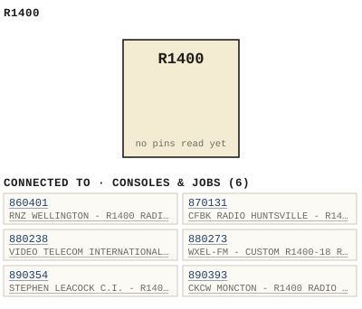

R1400
| Type | model |
| Consoles | Console models |
| Try it | simulator & front panel · download package (zip) |
| Earliest dated evidence | 1990|23 — named in document |
| Evidence | named in 1990 - DOC - CHIN Radio R14000001.pdf |
| Confidence | low (named by) |
| All years found | 1990|23, 1992|25 |
| Used in jobs | 860401 (1986|19), 870131 (1987|20), 880238 (1988|21), 880273 (1988|21), 890393 (1989|22), 890354 (1989|22) |
| Folder | Consoles/Models/R1400 |
Connections
What it is made of and what it is part of.
Pictures


R1400.connections.svg 19xx - 1400-04-003 - RADIO CONSOLE DESK CUTOUT DETAIL - DRN GEB - ENG GEB - ISS 1.jpg
19xx - 1400-04-003 - RADIO CONSOLE DESK CUTOUT DETAIL - DRN GEB - ENG GEB - ISS 1.jpgPinout & connections
Photos & scans (1)
| Year | File | |
|---|---|---|
| ? | 19xx - 1400-04-003 - RADIO CONSOLE DESK CUTOUT DETAIL - DRN GEB - ENG GEB - ISS 1.jpg | note |

Drawings (1)
Each scan with its trace laid over it: the slider runs from the scan to the vector drawing. Click one to see it large and save it as SVG, DXF, KiCad, PDF or PowerPoint.
R1400 / RADIO CONSOLE / DESK CUTOUT DETAILviewer
Read from the drawing title blocks.
| Drawing | Title | Date | Drawn by | Checked by | Iss. | Source |
|---|---|---|---|---|---|---|
| B 1400-04-003 | R1400 / RADIO CONSOLE / DESK CUTOUT DETAIL | GEB (Gerry E. Bell) | 1 | file |